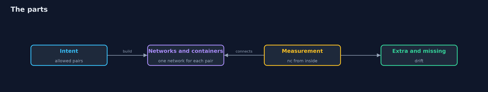
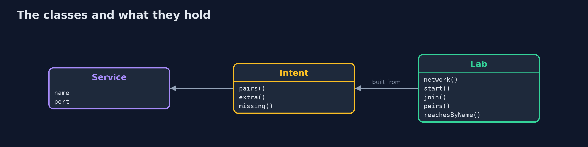
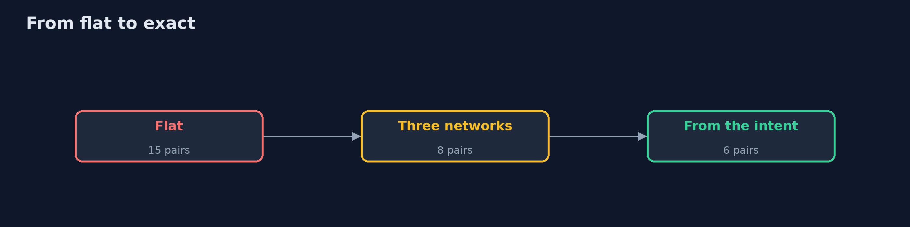
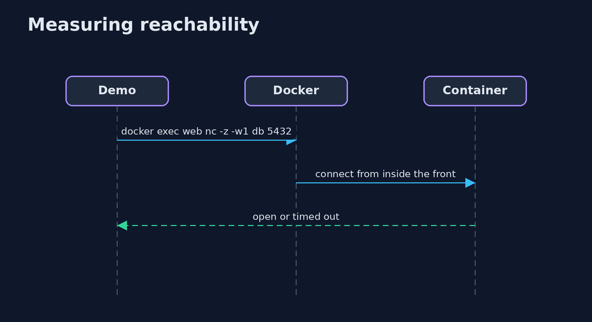

Network Isolation
src/main/java/com/jk/explore/security/netiso/
├── Intent.java What the design says may talk: pairs of services
├── Lab.java Real Docker networks and containers: each service is a container of the alpine image running busybox nc on its port (listening for ever, one connection after another), attached to the networks the layout gives it
├── NetworkIsolationDemo.java
├── Service.java One service of the shop: a name, the port it listens on and what it is
└── Sh.java The docker command, as a program
On real Docker networks, a taken-over front on one flat network reaches the database, the cache, the admin panel and the build server (15 of 15 pairs can talk, the design wanted 6); three coarse networks cut that to 8 pairs and the front reaches only the application, but members of one network reach each other, so 2 pairs nobody asked for exist; a layout built from the design as code, one internal network for each allowed pair, measures exactly 6 pairs, and a service joined to one more network is found as drift by measuring against the intent; internal networks have no way out, the front keeps one; reachable is not authorised and the Docker socket is worth more than every rule.
Every cloud calls it something different (a VPC, a security group, a subnet, a network policy), and they all answer one question: if this service is taken over, what can it reach? This project answers it by measuring. It builds real Docker networks for a shop of six services, each a container listening on its port, and tries to connect from inside each container. It needs Docker; the tests are tagged integration (the intent tests are not): ./gradlew integrationTest. The demo takes about two minutes, most of it connection attempts that time out, which is how a closed port looks from inside.
What it shows:
- One flat network. Six containers, one network. The taken-over front reaches the application, the database, the cache, the admin panel and the build server; 15 of 15 pairs can talk, and the design wanted 6.
- Three coarse networks. Front (web, app), back (app, db, cache, admin, internal) and management (admin, ci, internal). The front reaches only the application, by name and by address. But everything on a network reaches everything else on it: 8 pairs, of which 2 nobody asked for (admin-cache, cache-db).
- The design as code, and a layout built from it. The intent is six pairs. One internal network for each pair, each service on the networks of its pairs: measured 6 pairs, 0 extra, 0 missing. Someone with the Docker socket joins web and db to one more network, and measuring against the intent finds db-web at once.
- The edge. Only the front is published to the host (and only on a network that is not internal); of the six, only the front can reach a server on the internet side: internal networks have no way out.
- The bill. A service on several networks is a pivot; reachable is not authorised; the Docker socket beats every rule; one network for each pair does not scale, which is why clouds have security groups and clusters network policies; and the network is what you measure, not what you draw.
Maps to: NIST CSF 2.0 Protect (PR.IR network integrity) · CIS Benchmarks (Docker, cloud network sections) · CWE-923, CWE-1327 (binding to an unrestricted address) · MITRE ATT&CK lateral movement (TA0008).
The idea in everyday terms
A building where every door is unlocked from the inside. If a burglar gets into the lobby, can they reach the vault? Painting the corridors different colours changes nothing; walking the corridors with a stopwatch, from every room, tells you what a burglar could do.
The scenario
An online store with a web front, an application, a database, a cache, an admin panel and a build server. The demo takes over the front, then the rest, and counts what each can reach.
Run
./gradlew run
The demo tells the story in 5 acts, each printing exact numbers that the tests check:
| Act | What it shows |
|---|---|
| 1. One flat network | A taken-over front reaches the database, the cache, the admin panel and the build server; 15 of 15 pairs can talk. |
| 2. Three networks: front, back, management | The front reaches only the application, but members of one network reach each other: 8 pairs, 2 of them unwanted. |
| 3. The design as code, and a layout built from it | One internal network for each wanted pair measures exactly 6 pairs; a service joined to one more network is drift. |
| 4. The edge: what is published, and what can leave | Only the front is published to the host, and only the front can reach a server on the internet side. |
| 5. The bill | Pivots, reachable is not authorised, the Docker socket beats every rule, and a diagram of the network is a wish. |
Test
./gradlew test
8 tests in DemoRunsTest, IntentTest, IsolationTest. The intent and the comparison are tested with no Docker. The rest create real networks and containers and remove them (./gradlew integrationTest).
What the simulation got right, and what it left out
The networks and containers are real; the checks are connections from inside the containers, made with nc. Names and addresses are never printed, only which services reach which, so the output is the same on every run.
Technologies and versions
Every version below is pinned in the project's build files and was the latest stable release when the project was built.
| Technology | Version | Used for |
|---|---|---|
| Java | 25 | the language and runtime; a Gradle toolchain finds or downloads the JDK |
| Gradle | 9.8.1 (wrapper) | build and run; nothing to install, the wrapper downloads it |
| org.junit.jupiter:junit-jupiter | 6.1.3, set by junit-bom | JUnit 5: the tests (tests only) |
| org.junit.platform:junit-platform-launcher | 6.1.3, set by junit-bom | JUnit platform launcher, which Gradle needs to run the tests (tests only) |
| videokit | repository tool (tools/videokit) |
the narrated video and animation: Piper en_US-amy-medium, speed 0.8, longer pauses (the amy-slow voice) |
Learning Material
| Document | What it is for |
|---|---|
| Problem statement | the situation and what the project must show |
| Prerequisites | what you need to know first |
| Network Isolation, explained | the acts in prose |
| Session guide | a one-hour lesson with exercises |
| Animated walkthrough | the acts step by step, narrated |
| Threat model | what is protected, who could harm it, and how, using STRIDE |
| Spec | what this project must be true of |
| Expected output | the golden demo output every test and every port checks against |
The idea in one picture
The intent builds the networks; the measurement checks them.

Where each piece sits
A service, an intent and a lab.

How the data moves
Pairs that can talk.

Who calls whom, in order

Video
video/network-isolation-explained.mp4 (with .m4a audio and .srt subtitles) is built by video/build_video.sh. Rendered media is not committed.
What it costs
- More networks mean more to manage, and a layout that is not generated drifts.
- The measurement takes time: a closed port is found by waiting.
- A service on two networks is a bridge between them.
- Segmentation is not authentication: a reachable port still has to say no to the wrong caller.
- Egress is easy to forget, and it is how stolen data leaves.
When this is too much
A development laptop with three containers does not need a network design. Segment when the services are not equally trusted: when one is on the internet and another holds data.
Where you have already met this
- A compose file with a single default network.
- A security group with 0.0.0.0/0 on every port.
- An internal flag on a Docker network.
- A firewall change that was made in the console and never written down.
Where this sits
This is the second project of the cloud-security-without-a-cloud module, after cloud-iam-models. The same question for Kubernetes is the subject of kubernetes-network-policies.